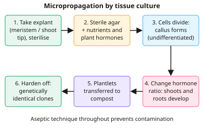

A-level Biology Year 13 · Topic 16
Cloning and biotechnology
Cloning and biotechnology looks at how plants and animals can be copied, and how microorganisms are put to work making food and medicines.
We will compare natural and artificial cloning in plants, embryo splitting and nuclear transfer in animals, and weigh up the advantages and problems of each.
Then we see how microorganisms are used to make bread, yoghurt, mycoprotein, penicillin and insulin, and how fermenters are controlled.
- 4 subtopics
- 150 questions
- Free: 16.1 notes and 10 questions
In this topic
- 16.1Natural and artificial cloning in plants: vegetative propagation, cuttings and tissue cultureFree below · 32 questions
- 16.2Cloning in animals: embryo splitting and somatic cell nuclear transferOpen in Full Marks · 32 questions
- 16.3Microorganisms in biotechnology: food, drink and medicine productionOpen in Full Marks · 37 questions
- 16.4Immobilised enzymes, and batch and continuous cultureOpen in Full Marks · 49 questions
16.1 · Free notes
Natural and artificial cloning in plants: vegetative propagation, cuttings and tissue culture

Key points
- Natural cloning in plants is vegetative propagation: new plants grow from parts of the parent by mitosis, with no gametes or fertilisation. The offspring are genetically identical clones of the parent.
- Examples of natural vegetative propagation: runners (strawberry), tubers (potato), bulbs (daffodil), rhizomes (ginger) and suckers. Each has a store of food and a meristem or bud that grows into a new plant.
- Advantages of natural cloning: it is fast, needs no pollinator, and keeps the desirable characteristics of a successful parent. Disadvantages: there is no genetic variation, so the whole population is vulnerable to one disease or environmental change.
- Cuttings are an artificial method. A shoot is cut below a node, the lower leaves are removed, and the cut end is dipped in rooting powder containing auxin. It is planted in moist compost, and adventitious roots grow from the stem.
- Tissue culture (micropropagation) works because plant cells are totipotent: they retain the ability to differentiate into any cell type and form a whole plant.
- Method: take an explant (e.g. a meristem tip) and sterilise its surface with dilute bleach or ethanol. Place it on sterile nutrient agar containing auxin and cytokinin. The cells divide by mitosis to form callus, an undifferentiated cell mass.
- Changing the hormone balance controls development. A higher auxin : cytokinin ratio stimulates roots, and a higher cytokinin : auxin ratio stimulates shoots. Plantlets are then hardened off before planting out.
- Aseptic technique is essential: sterile tools, flaming, a sterile cabinet and sterile agar. The nutrient-rich medium would otherwise let bacteria and fungi outcompete or infect the explant.
- Advantages of tissue culture: many identical plants from a small sample, all year round, in a small space. Meristem culture gives virus-free stock, and it can conserve rare species and propagate plants that seed poorly.
- Disadvantages of tissue culture: it is expensive, needs skilled staff, and any contamination ruins a batch. Genetic uniformity reduces diversity and leaves crops susceptible to a single pathogen.
- Both natural and artificial plant cloning involve mitosis only, so offspring are identical to the parent barring somatic mutations. Sexual reproduction, by contrast, uses meiosis and fertilisation and produces variation.
In more detail
- Why cuttings root: applying auxin-based rooting powder stimulates adventitious roots to form at the cut end, so the cutting establishes faster.
- Sterilising explants: dilute bleach or alcohol kills microbes on the surface; any surviving contamination would grow rapidly in the nutrient-rich medium and ruin the culture.
- Callus: an undifferentiated mass of cells formed from the explant, which can then be induced to form shoots and roots by changing the hormone balance.
- Commercial examples: orchids, bananas and potatoes are mass-produced by tissue culture, giving disease-free, uniform plants.
Practice
Natural and artificial cloning in plants: vegetative propagation, cuttings and tissue culture: 10 questions
Pick an answer to check it, or open the answer for the explanation.
1. Which is an example of natural vegetative propagation?
- Strawberry runners forming new plantlets
- Wind pollination of grass flowers
- Growing callus on nutrient agar
- Grafting a scion onto rootstock
Show answer
A: Strawberry runners forming new plantlets. Runners are horizontal stems that produce genetically identical plantlets by mitosis, with no gametes. Grafting and callus culture are artificial methods, and pollination is sexual.
2. Why can a single cell from a plant explant grow into a complete new plant in tissue culture?
- It undergoes meiosis to form gametes
- It has lost its nucleus and gains a new one
- It is totipotent and can differentiate into any cell type
- It contains more genes than a root cell
Show answer
C: It is totipotent and can differentiate into any cell type. Plant cells retain all their genes and can be totipotent. With the correct hormones they can divide and differentiate into every cell type needed for a whole plant.
3. Why are sterile agar and aseptic technique used in tissue culture?
- Microbes thrive on the nutrients and would outcompete the explant
- Sterile agar slows cell division to avoid mutations
- Aseptic technique makes the plant cells totipotent
- Bacteria would absorb the light needed for growth
Show answer
A: Microbes thrive on the nutrients and would outcompete the explant. The nutrient-rich, warm medium suits bacteria and fungi, which grow faster than plant tissue and would outcompete or infect it. Sterility does not affect totipotency.
4. In plant tissue culture, which hormone balance favours root formation from callus?
- Abscisic acid at high concentration
- High cytokinin to auxin ratio
- High auxin to cytokinin ratio
- Gibberellin only, with no other hormones
Show answer
C: High auxin to cytokinin ratio. A higher auxin : cytokinin ratio promotes root development. A higher cytokinin : auxin ratio promotes shoot development.
5. A callus is divided into 4 pieces every 3 weeks and each piece regrows. Starting with 1 callus, how many pieces exist after 12 weeks?
- 16
- 48
- 256
- 1024
Show answer
C: 256. 12 weeks is 4 cycles of 3 weeks. Each cycle multiplies the number by 4, so 4^4 = 256.
6. Why are meristem tips often used as explants to produce virus-free plants?
- Meristem cells produce antiviral antibodies
- Viruses cannot enter cells that divide by mitosis
- Meristem cells are haploid so cannot be infected
- Meristems lack developed vascular tissue so viruses are largely absent
Show answer
D: Meristems lack developed vascular tissue so viruses are largely absent. Viruses spread through vascular tissue, which is poorly developed in the apical meristem, so the tissue is usually virus-free. Its cells also divide rapidly and are totipotent.
7. A grower wants thousands of identical orchid plants quickly. Which is the main advantage of micropropagation over growing from seed?
- Plants need no nutrients
- Offspring are produced by meiosis
- Many identical plants from a small tissue sample, all year round
- Plants show greater genetic variation
Show answer
C: Many identical plants from a small tissue sample, all year round. Tissue culture uses mitosis to produce large numbers of genetically identical plants from a small explant, in a small space and independent of season. Seed involves meiosis and variation.
8. A cutting is dipped in rooting powder before planting. Which substance does the powder contain and why?
- Auxin, to stimulate root growth from the stem
- Gibberellin, to break seed dormancy
- Ethene, to cause leaf fall
- Cytokinin, to stimulate shoot growth
Show answer
A: Auxin, to stimulate root growth from the stem. Rooting powder contains synthetic auxin, which stimulates the formation of adventitious roots on the cut stem.
9. 20 cuttings given rooting powder: 17 rooted. 20 untreated cuttings: 9 rooted. By how many percentage points did rooting success increase?
- 8
- 89
- 40
- 20
Show answer
C: 40. Treated: 17/20 = 85%. Untreated: 9/20 = 45%. The difference is 40 percentage points. 8 is the difference in number of cuttings, and 89% is the relative increase.
10. Which statement about vegetative propagation and tissue culture is correct?
- Only tissue culture gives genetically identical offspring
- Both involve meiosis and fertilisation
- Only vegetative propagation involves mitosis
- Both involve mitosis and give genetically identical offspring
Show answer
D: Both involve mitosis and give genetically identical offspring. Both are asexual: cells divide by mitosis, so the offspring are genetically identical to the parent. Neither involves meiosis or fertilisation.
Keep going in Full Marks
Full Marks has 32 questions on Natural and artificial cloning in plants: vegetative propagation, cuttings and tissue culture (22 more than here), set out in practice levels. You also get notes and 3D models for all 4 subtopics of Cloning and biotechnology, plus games, timed exams and past papers.
On your exam board
- OCR ATopic 6.2.1: Cloning and biotechnology
- OCR BTopic 5.2: Gene expression and genetic engineering
- EdexcelTopic 7: Modern genetics
Not in the AQA and Cambridge specifications.